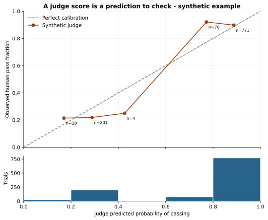
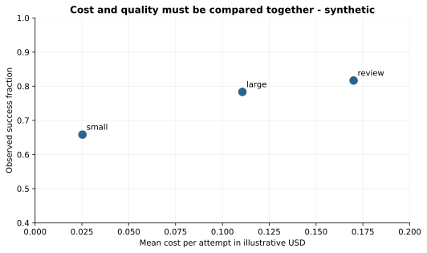

Browse chapters
9 Evaluate agents and their judges
An agent has an outcome and a path
For an agent, a final answer can look correct while the process was unsafe, wasteful, or incomplete. A coding agent might claim success without passing tests. A research agent might produce fluent prose with unsupported citations. An agent that operates tools might reach the right final state after taking an unauthorized intermediate action.
Define outcome checks and process checks separately. Outcome checks ask whether the requested result exists and satisfies its requirements. Process checks ask whether the agent respected constraints, used tools correctly, preserved data, and stayed within budgets. A trace helps explain a failure, but a long trace is not evidence of a good outcome.
Anthropic's engineering guidance distinguishes tasks, repeated trials, grading logic, transcripts, and final environment outcomes. That vocabulary is useful because it prevents one agent response from being mistaken for the whole evaluation. It also emphasizes that different grader types have different strengths. Demystifying evals for AI agents
For a Chrema-style system that observes agents and evaluates other agents, this suggests a concrete starting schema: task, attempt, agent version, environment version, trace reference, final-state evidence, individual checks, judge version, and review status. This is a proposed design for the stated use case, not a description of Chrema's current implementation.
Write a rubric that can fail
“Good answer” is too vague for a reliable label. Break the task into observable criteria. For a research answer, criteria might include whether each central factual claim has a supporting source, whether cited pages were actually retrieved, whether the response answers the question, and whether uncertain facts are labeled appropriately.
A rubric should include positive, negative, and borderline examples. Specify what counts as failure. If a missing critical source is unacceptable, do not allow strong writing style to average it away. Some requirements should be gates rather than weighted scores.
Use deterministic checks where they are appropriate: schema validity, exact state, unit-test results, file existence, constraints, or known invariants. Use model-assisted or human review for aspects that require interpretation. Keep the component results so you can tell whether an aggregate changed because of factuality, usefulness, formatting, or a different mix of tasks.
Build an evaluation set around intended use
Collect ordinary cases, difficult cases, known regressions, and important rare failures. These sets serve different purposes. A production-weighted set estimates expected behavior under a stated workload distribution. An adversarial set probes whether a failure is possible. A regression suite protects previously fixed behaviors. Do not pool them into one average without explaining the weights.
Keep task families and difficulty indicators. Where possible, compare variants on the same tasks and planned number of trials. Preserve a development set for prompt and rubric iteration and a held-out set for confirmation. If evaluation tasks are repeatedly exposed to the agent or used to tune its prompts, they no longer provide a clean estimate of performance on unseen tasks.
Also version the environment. Tool availability, repository contents, permission settings, network behavior, and service responses can change results. A prompt alone is not a reproducible agent test case.
Repeated trials reveal reliability
A single success shows that an agent can solve a task once under the tested conditions. It does not show that it will do so reliably. Run repeated trials when stochastic behavior matters, keeping the task and environment controlled.
Report trial-level success and task-level summaries. “At least one success in several attempts” measures a different capability from “every attempt succeeds.” If independent attempts each have success probability p, the chance of at least one success in k attempts is 1 minus (1 minus p) to the kth power. Real retries may be dependent, so do not use that formula blindly.
A system that succeeds after five attempts may be useful when a verifier can cheaply select the correct result. It may be unacceptable when the first wrong action causes irreversible damage. Reliability must be evaluated in the actual interaction pattern, including budgets and verification costs.
A judge is another measurement system
A model judge can reduce review cost, but its output is an imperfect measurement. It may prefer an answer's position, length, or stylistic resemblance to its own outputs. The MT-Bench and Chatbot Arena study documented position, verbosity, and self-enhancement biases in the judges it examined. Its results do not establish that every modern judge is accurate on your domain. Zheng and colleagues on LLM judges
Validate the judge on a relevant, independently labeled sample. Blind reviewers to the agent variant when possible. Randomize answer order in pairwise comparisons and test whether reversing order changes the result. Keep the judge prompt, model, decoding settings, and rubric version. Inspect disagreements rather than only the agreement rate.
Human labels also need a process. Use clear instructions, multiple reviewers for an overlap sample, and a way to resolve consequential disagreements. A reference label is an adjudicated standard for the test, not infallible truth. Record ambiguity rather than forcing every case into a confident binary label.
Read a confusion matrix
The companion contains 1,080 synthetic trial records across 120 invented tasks, three illustrative agent variants, and three trials per variant. The fields named human_pass and judge_pass are generated labels. No real humans or deployed agents produced this dataset. It exists to make the following arithmetic reproducible.
Using the generated reference label as the standard, the synthetic judge has 762 true positives, 182 true negatives, 85 false positives, and 51 false negatives. Its overall agreement is 944 divided by 1,080, about 87.4 percent.
That single percentage hides an important asymmetry. Among the 267 reference failures, the judge accepts 85, about 31.8 percent. Among the 847 judge-approved cases, 85, about 10.0 percent, are reference failures. These are different denominators and answer different questions. The first is a false-positive rate; the second is the fraction of approved outputs that are wrong under the reference.
If a judge is a release gate, false approvals may be especially costly. If it is a triage tool that sends uncertain cases to a reviewer, coverage and review cost also matter. Choose the operating threshold for the consequence, then validate it on data not used to choose the threshold.
Calibration is a separate question
A judge may emit a score that looks like a probability. Calibration asks whether cases assigned a given probability succeed at roughly that frequency. A score of 0.9 should not be interpreted as a 90 percent chance of passing merely because it lies between zero and one.
Group predictions into a few bins, plot mean predicted probability against observed reference success, and show how many observations occupy each bin. The calibration chart in the companion has a very sparse middle because the synthetic judge tends to be either confident or doubtful. Its middle bin contains only four trials. A connecting line does not make that region well measured; the counts are essential to interpreting the apparent shape.

Figure 5. Generated judge probabilities compared with generated reference labels. Bin counts and the score distribution are shown. This is an illustration of calibration analysis, not evidence about Chrema or any real model judge.
Calibration and discrimination are different. A model can rank likely successes above failures while its probabilities are too extreme. A well-calibrated low-information predictor can emit the base rate for every case and be poor at ranking. Evaluate both according to the intended decision. scikit-learn probability calibration
Cost belongs in the same evaluation
Measure total cost of attempts, tools, retries, verification, and human review where relevant. “Cost per successful outcome” can be calculated as total evaluation cost divided by the number of verified successes for a defined workload. It includes failed attempts in the numerator. Calculating average cost only among successful attempts hides wasted work.
That ratio is descriptive for the observed evaluation process. It is not automatically the expected cost of retrying until success. Such a claim needs a retry policy, dependence assumptions, stopping rules, and an account of tasks that may never succeed.

Figure 6. Synthetic mean cost and reference success for three invented variants. More expensive variants are not automatically preferable. The right choice depends on quality requirements, failure consequences, latency, and the production task mix.
A Pareto-dominated variant is worse or equal on every chosen objective and strictly worse on at least one. Removing clearly dominated choices can simplify a decision. The remaining frontier still requires priorities; a plot cannot decide how much one additional success is worth.
A practical first evaluation for Chrema
Begin with a small set of representative tasks and explicit outcome checks. Run two versions on the same tasks, with repeated trials where affordable. Review an overlap sample independently. Compare results by task family, inspect the largest disagreements, and measure the judge's false approvals on known failures.
Create a regression set from important real failures after they occur, but keep it separate from a fresh evaluation set. Track changes to the rubric as carefully as changes to the agent. If the judge changes and the score rises, you have not yet shown that the agent improved.
Exercise: design one deterministic check, one model-assisted check, and one human-review question for an agent task you care about. Then describe a case that could pass all three while still failing the user's real goal. Use that counterexample to improve the evaluation.
Agreement is only one denominator
Edit the confusion matrix and watch three apparently similar accuracy statements separate.
Synthetic labels from the companion, not actual human review. Rows with repeated trials are not independent tasks. False-positive rate = FP / (FP + TN); false-discovery fraction = FP / (TP + FP).